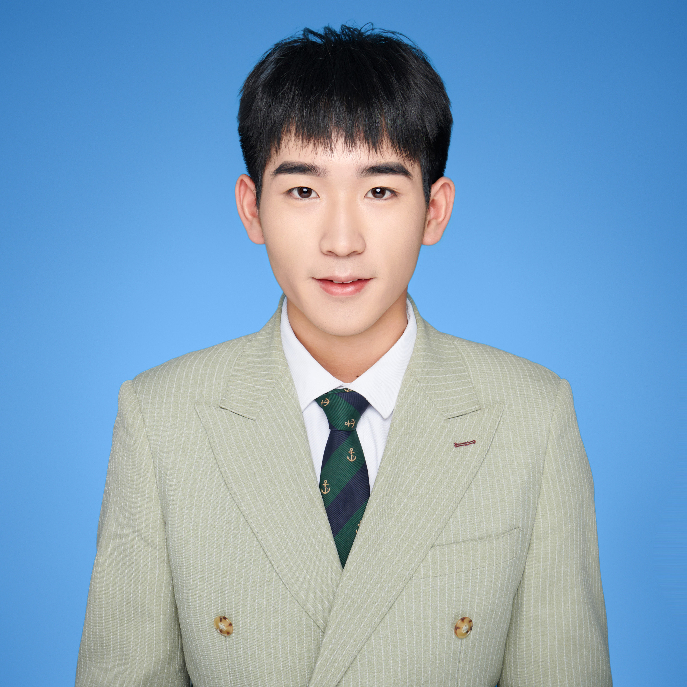

舒 进
专业：教育技术学
download resume
基本信息
年 龄 :
21岁
民 族 :
瑶族
电 话 :
18874560084
邮 箱 :
3113270076@qq.com
籍 贯 :
湖南省辰溪县
性 别 :
男
工作年限 :
应届生
政治面貌 :
共青团员
毕业院校 :
陕西师范大学
学 历 :
本科
教育背景
2020-09 ~ 至今
陕西师范大学
人工智能(本科)
专业成绩：
GPA 3.60/10 (专业前20%)
主修课程：
C 语言程序设计、数据结构、人工智能基础、计算机组成原理、Linux 基础、Python 语言程序设计、 机器学习、操作系统、Java 语言程序设计、数据库基础、算法设计与分析、计算机网络、计算机视觉、深度学习
项目经验
2022-03 ~ 2023-06
基于 LightGCN 的课堂社交关系预测与实现
成员
项目描述：
本项目是基于 LightGCN 对课堂中学生社交关系的预测，通过使用我们的方法，可以对课堂中学生的社交关 系进行初步的预测。当然，我们的项目不但可以应用于教学，还可以应用于学生的心理健康监测以及学生的行为管理。 而在社会层面上，社交关系的应用更为广泛: 譬如在谣言检测中，可以通过一个人的社交关系判断谣言的传播范围。目 前，项目组申请了专利，名称为“一种社交关系检测方法”。
我的职责：
代码编写、数据分析
2022-03 ~ 2023-06
基于多视角的合成孔径成像方法研究
成员
项目描述：
本项目研究多视角超分辨深度网络与合成孔径成像技术的结合。我们将相机阵列采集的多幅图像当做连续的 帧，构建适用于视频超分辨的网络来对这多幅图像进行超分辨，再对超分辨后的中间图像进行变换、平移和和合成来获 取被遮挡物的高质量图像。
我的职责：
实验协助
校园经历
2021-07 ~ 2021-07
陕西师范大学“职通未来”优秀学子暑期游学就业体验营
宣传员
本次游学活动为期七天，我们走访了武汉这座城市，参观了中铁十一局六公司、武汉新芯集成电路制造有限公司、华为技术有 限公司武汉研究所等九所知名企业。在深入充分的考察学习过程中，我们详细了解参访企业的业务领域和运作模式，近距离感 受著名企业的先进理念和创新举措，为我们下一步入职奠定了基础。与此同时，我们也参观了武汉大学，了解了经济发达地区 对人才专业能力的需求。
荣誉证书
2021-2022 学年获国家励志奖学金
2022-2023 学年获国家励志奖学金
2021-2022 学年获陕西师范大学二等优秀奖学金
2022-2023 学年获陕西师范大学三等优秀奖学金
2022 年获陕西师范大学“优秀学生”荣誉称号
2021 年获“陕西师范大学&Intel OpenVINO AI 视觉应用项目实战营”团队三等奖
2022 年获第二届全国信息融合挑战赛决赛优秀奖
2022 年获陕西师范大学第四届“阅读暑假，走进经典”本科生读书笔记活动校级优秀奖
自我评价
本人性格随和乐观，积极向上，喜欢钻研，工作认真负责，拥有较强的组织能力和适应能力，并且具有良好的身 体素质。乐于沟通，易于融入集体，乐于助人，学习能力较好，注重理论与实践相结合，在工作中不断提高专业 知识之余，同时也不断地提高做人、做事的能力，争取将工作做的更好，争取做更好的自己。